Global Long Island (LI)'s mission is to measure and enhance the international engagement of Long Island.
Global LI works to evaluate the global competitiviness of Long Island and to determine the region's international engagement readiness, capability and commitment.
More About UsLong Island Engagement
3M
Long Island Residents
189+
Data Collected
61K
Employment Opportunities
FDI Profile and Trends
Explore Foreign Direct Investment Employment, by industry and Long Island's top investors.
Exports Data and Analysis
Explore Nassau and Suffolk's 2017 export by industries
FDI Profile and Trends
Explore Foreign Direct Investment employment, by industry, and Long Island's top 10 investors.
Exports Data and Analysis
Explore Nassau and Suffolk's 2017 export by industries